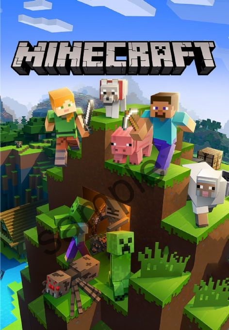

Minecraft Build Battle
Hi Everyone, Our Minecraft Building Competition makes its return! Test your creativity by competing against the clock and fellow students to build a creation based on a given theme that will be assessed by a panel of CSS judges! The competition will be held on November 25th @ 4 PM EST The server IP and theme will be sent at the time of the event and the winners will receive prizes!
Demo Day!

Hi Everyone, We are organizing the 8th School Computer Science Demo Day event, a professional forum for students to showcase their practical/research projects to the University community and external industry partners. The In-Person event has been scheduled for Friday, December 8th, from 10:00 am to 1:00 pm at the School of Computer Advanced Computing Hub, located at 300 Ouellette Avenue. This is an excellent opportunity for our students to network with other students, faculty members, and industry partners. We would encourage you, students, to attend this year's Demo Day and present your valuable research or practical projects. We encourage students to present their real-time project demonstrations to showcase their technical skills. If you are interested in participating in the School of Computer Science Demo Day, please click on the following link https://forms.gle/f4QRDSdhQNWpaPum9. The deadline for proposals is November 24th.
Programming Competition & CS GAMES Info
üöÄ UWindsor Programming Competition Announcement üöÄüéÆ We're thrilled to bring to you another exciting coding showdown ‚Äì the UWindsor Programming Competition (UWPC)! It‚Äôs your opportunity to showcase your skills, tackle interesting problems, and potentially catch the eye of the recruiters for CS Games. Let‚Äôs get those coding muscles ready! üíªüèÜ Why You Should Participate: UWPC is a fantastic platform to test your skills, learn, and connect with fellow programming enthusiasts. Plus, it's a part of the screening process for the CS Games, a prestigious programming competition set to take place this year in Montr√©al, QC. üåÜüïπÔ∏è Sign Up: Don‚Äôt miss out on this fantastic opportunity. Your performance at UWPC will give us a glimpse of your problem-solving skills and coding prowess, and it could enhance your chances in the later stages of the CS Games selection process. Registration will close November 15 @ 11:59 PM CS Games is an event that the Computer Science Society sponsors annually. We send two teams of ten students (20 total) to compete in a series of competitions. If you are interested in attending, PLEASE APPLY HERE. We will take your UWPC results into account during the selection process. If you are unable to attend UWPC, we will have an alternative project for you to complete at a later date, although it is highly recommended to attend UWPC if you are able. You are still required to apply, even if you cannot attend UWPC. CS Games 2024 will take place on March 15‚Äì18. CSS will be subsidizing part of this trip, although there will be a fee students will be responsible to pay (which will be disclosed at a later date).